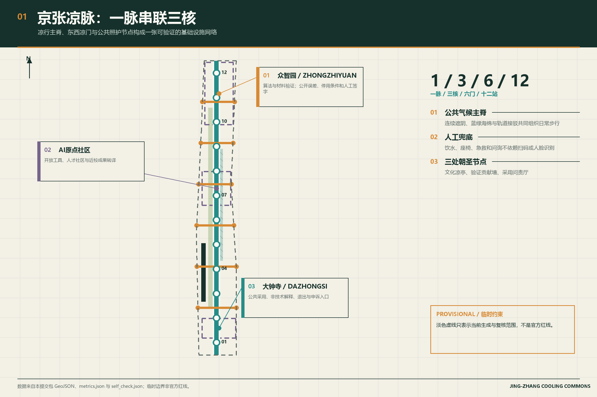
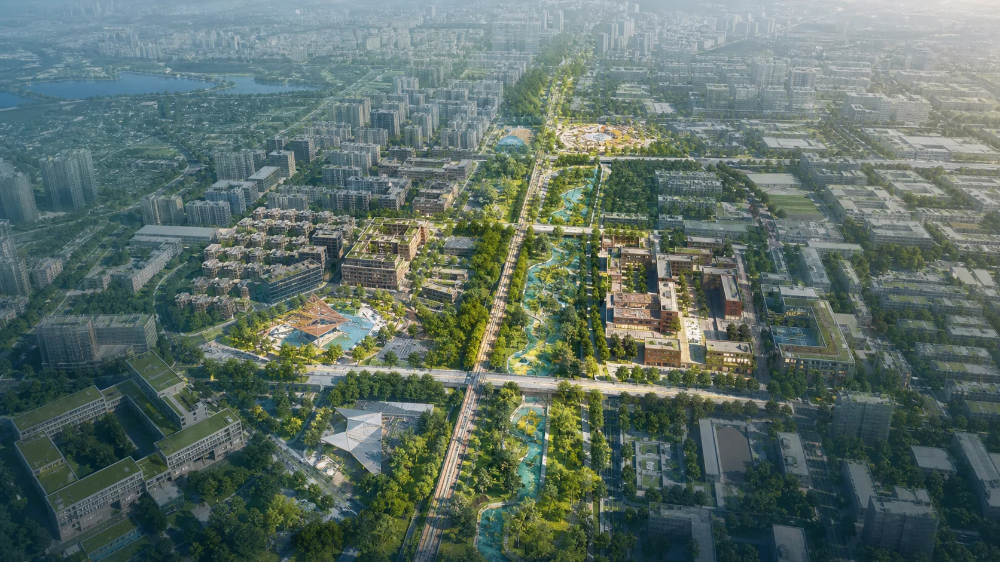
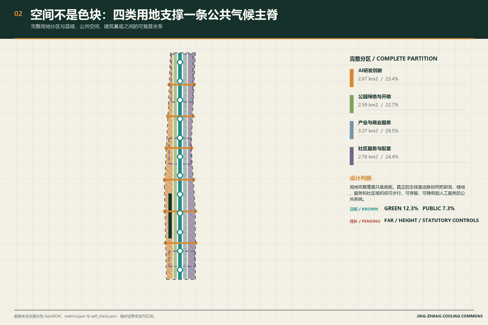
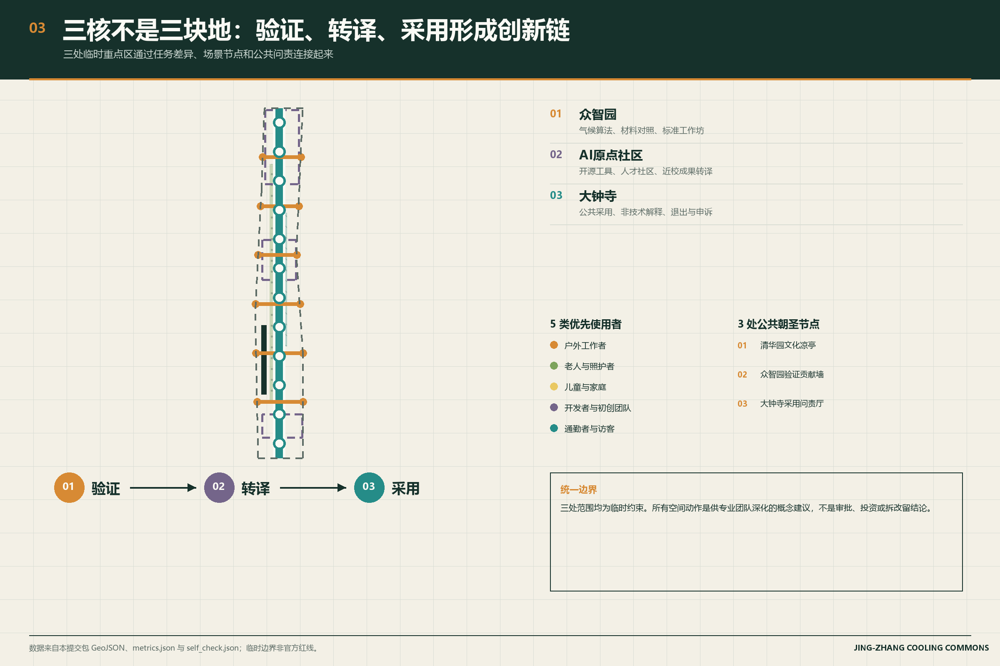
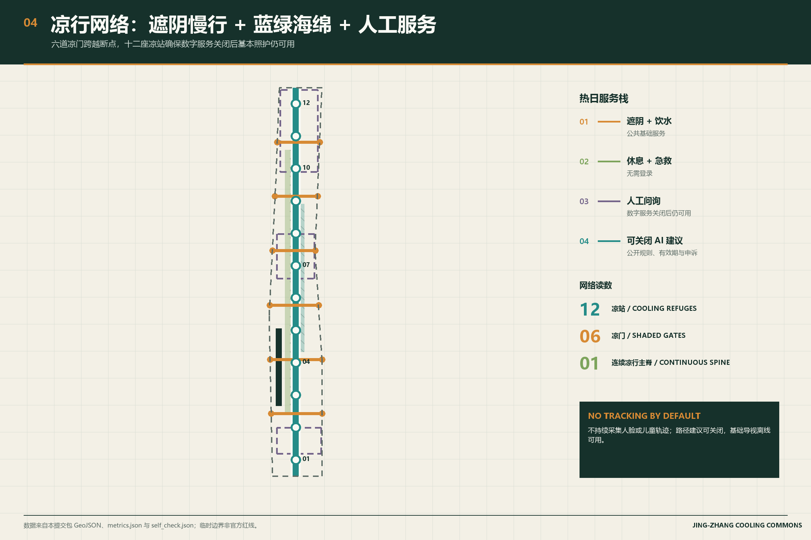
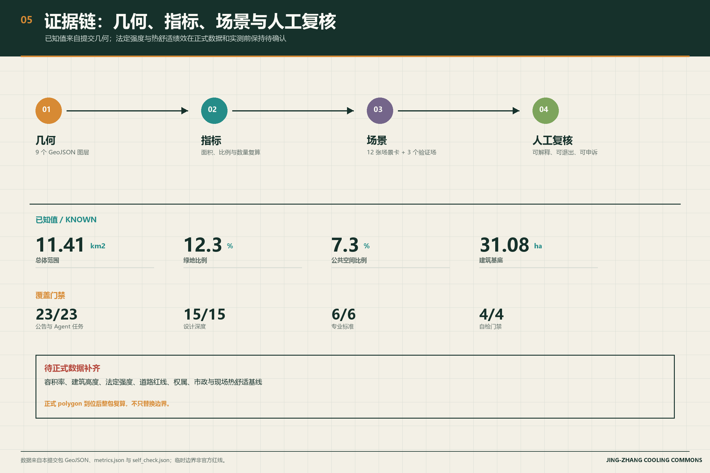

01
总体概念
一脉把三核、六门和十二站组织为公共照护网络。

以遮阴、蓝绿空间、凉站和人工兜底组织一条可验证的公共气候基础设施。

临时边界仅用于概念生成、可视化与自检，不是官方红线、审批依据或精确面积依据。
一脉把三核、六门和十二站组织为公共照护网络。

完整用地分区是底板，凉脉与公共空间关系才是主叙事。

验证、转译、采用对应三种任务与三处公共朝圣节点。

数字服务可以关闭，饮水、遮阴、急救和人工问询持续可用。

已知指标来自提交几何，法定强度与热舒适绩效保持待确认。

容积率、建筑高度、法定强度、道路红线、权属、市政和现场热舒适基线待正式资料与专业复核补齐。